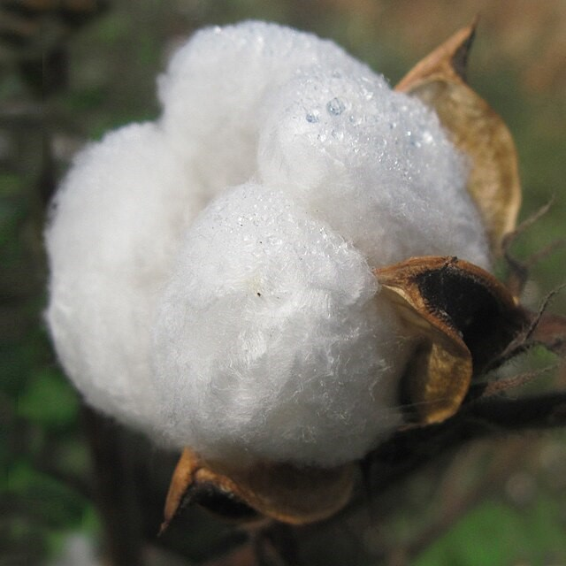

🧬 ПОСТИРОНИЯ И НЕЙРОСЕТИ: 2020-е 🧬
Эпоха TikTok-абстракций, сгенерированного контента, Шлёпы и глубоких слоёв метаиронии.
Бавовна

Бавовна — мем, що виник та масово поширився під час повномасштабного російського вторгнення в Україну. «Бавовною» називають вибухи на тимчасово окупованій території України та на території Російської Федерації.